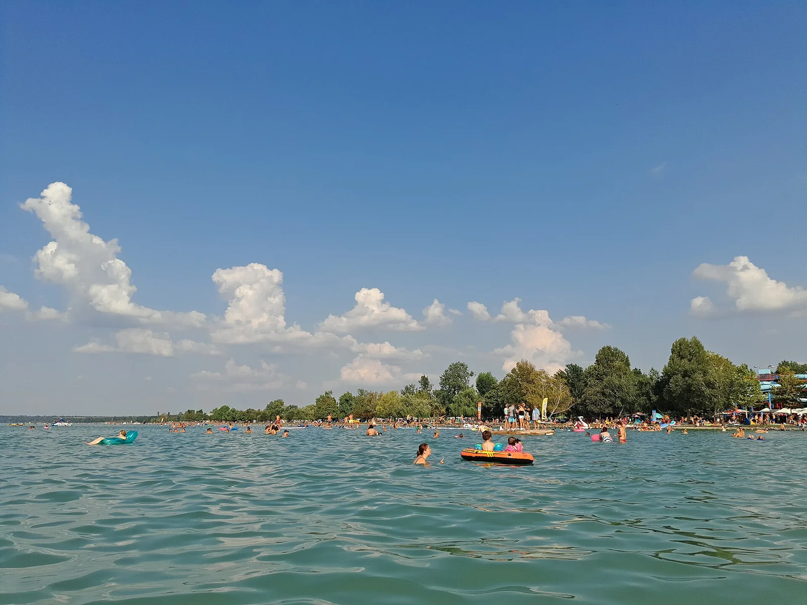

Lac Balaton — Siófok
Somogy, Hongrie · baignade, paddle, windsurf

Plus grand lac d’Europe centrale, bordé sur sa rive sud de plages peu profondes. À Siófok, on a pied loin du bord : idéal pour se baigner en famille, faire du paddle ou tirer ses premiers bords en windsurf.
- Lieu
- Somogy, Hongrie
- Niveau
- Débutant
- Activités
- baignade, paddle, windsurf
- Type d'eau
- lake
- Coordonnées
- 46.91, 18.05 (position approximative du secteur)
Dangers à connaître
- Coups de vent et orages soudains : respecte les feux d’alerte.
- Bateaux et zones de navigation au-delà des zones de baignade.
Le conseil d'Ocean Buddy
Repère les feux d’alerte tempête qui clignotent autour du lac : quand ils accélèrent, reviens vite au bord.
Ouvrir dans Ocean Buddy Télécharger sur l'App Store
Source : Fiche Ocean Buddy · septembre 2026 · à vérifier localement.